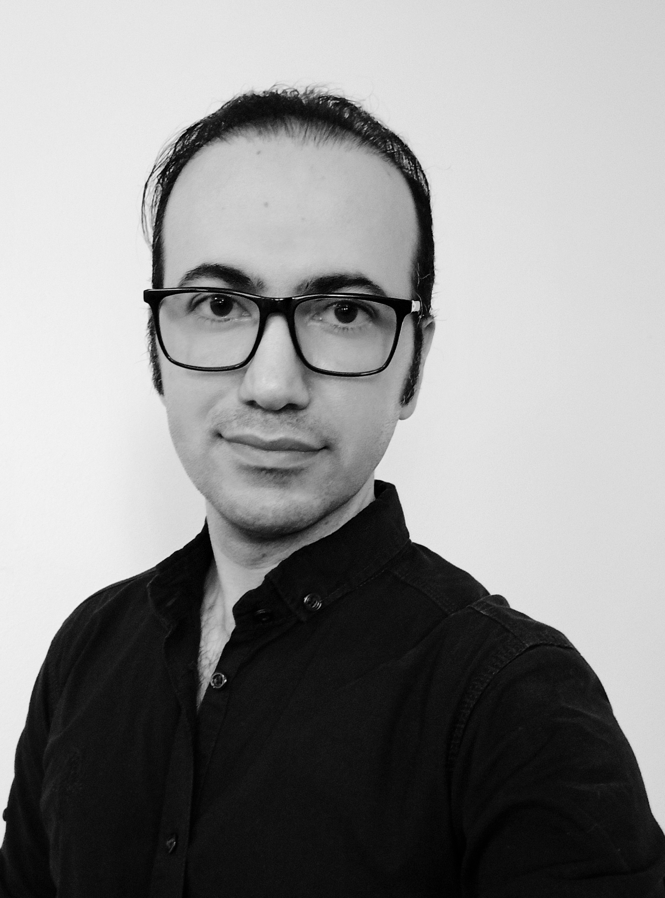

PhD Candidate in Visual and Performing Arts
University of Texas at Dallas
Researcher | Filmmaker | Educator
I am a filmmaker, practitioner-researcher, and PhD candidate in Visual and Performing Arts at The University of Texas at Dallas. My research focuses on the relationship between cinematic form and politics, with particular interests in transnational political image-making, cinema and moving-image media, Iranian art cinema, experimental animation, political aesthetics, and practice-as-research. Working across both theory and filmmaking practice, I examine how cinematic strategies can contribute to the creation of political images through visual form rather than explicit political content.
PhD Candidate in Visual and Performing Arts
The University of Texas at Dallas
M.A. in Animation
University of Art, Tehran
B.A. in Architecture
University of Applied Science and Technology
Bertolt Brecht’s Soul in the Body of Experimental Animation: Common Audiovisual Strategies between Epic Theatre and Robert Breer’s Short Animations
Avanca Cinema Journal, No. 13, 2022
Visual Method of Paronomasia in Amir-Hamzeh Animation as a Strategy for Creating a Musical-Literary Animated Narrative
Book Chapter (Persian), Short Film Studies: Narration in Short Film, JICA Publication, 2021
Figurative Language Methods as Strategies of Socio-Political Criticism in Jan Švankmajer’s Films
Journal of Visual Art and Design, No. 12, 2020
Book (Persian): Cryptic Arms: Jan Švankmajer’s Filmmaking Techniques as Strategies of Sociopolitical Criticism
Shivatir Publications, 2019
Common Aspects Between Feature and Short Films in Applying Major Styles of Figurative Language
Conference Proceedings Chapter (Persian), Tehran International Short Film Conference: Past, Present, Future, Aban Publication, 2018
Society for Cinema and Media Studies (SCMS), 2026
The Unbreakable Bond Between Politics and Film in the History of Iranian Cinema
Society for Animation Studies (SAS), 2026 (Accepted Presentation)
Animating Presence in Experimental and Expanded Animation: Materiality, Performance, and Artistic Agency
Northeast Modern Language Association (NeMLA), 2026
Examining Experimental Animation Strategies and Pixilation to Develop a Body- and Mind-based Style
International Association of Maternal Action and Scholarship (IAMAS), 2025
Mythological Destabilization of Masculine Hegemony in Lucrecia Martel's Salta Trilogy
South Atlantic Modern Language Association (SAMLA), 2024
Mircea Eliade's Mythological Vision and Archetypal Patterns Through Terrence Malick's Lens
RED, BLACK & BLUE (2023, 6 min.)
Co-director and co-producer with Dárè Akinwole
Editor and Sound Designer
WHEN L.R WEPT (2022, 5 min. 30 sec.)
Director, Writer, Producer, Animator, Editor, and Sound Designer
V. CYCLE (2019, 3 min. 45 sec.)
Director, Writer, Producer, Animator, Editor, and Sound Designer
LOCKED (2019, 11 min. 22 sec.)
Director, Writer, Producer, and Editor
For Freedom (2016, 3 min. 20 sec.)
Director, Writer, Producer, Animator, Editor, and Sound Designer
Fashion Nazi (2016, 1 min. 40 sec.)
Director, Writer, Producer, Animator, Editor, and Sound Designer
The Prophets of Terror (2016, 4 min. 25 sec.)
Director, Writer, Producer, Animator, Editor, and Sound Designer
Unjust Matches (2016, 3 min. 50 sec.)
Director, Writer, Producer, Animator, Editor, and Sound Designer
Landscape(s): Reimagining Our Shared Spaces (2026)
International Juried Exhibition, Old Walls Gallery, Albuquerque, New Mexico, USA
Concept Drawing: HUROCKMON (from the Natural Humonsters series)
Before the Algorithm (2026)
Juried Exhibition, The Courtyard Theater Gallery, Plano, Texas, USA
Concept Drawings: HUMUDMON and HUROCKMON (from the Natural Humonsters series)
Artists as Catalysts for Social Change (2025)
International Juried Exhibition, Ludington Area Center for the Arts (LACA), Michigan, USA
Concept Drawing: HUROCKMON (from the Natural Humonsters series)
Email: ah.khoshniat@gmail.com